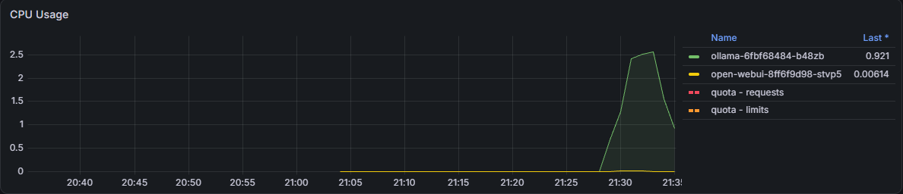
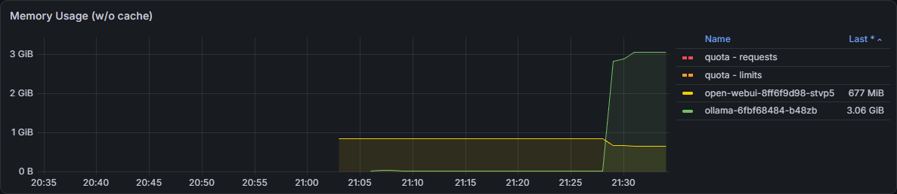

Self-Hosted LLM on Kubernetes (k3s)
An open-source language model served from Kubernetes, the way a platform team would run it: a model server with persistent storage and health checks, a chat UI behind an ingress, resource requests and limits, and Prometheus/Grafana watching all of it. Single node, CPU-only, built from a blank Ubuntu Server install.
- stack
- Ubuntu Server 24.04 · k3s (Kubernetes 1.36) · Ollama · Open WebUI · Traefik · kube-prometheus-stack
- model
llama3.2:3b, Q4_K_M quantization, 2.0 GB- node
- 6 vCPU (AVX2), 8 GB RAM, 60 GB disk, no GPU
- result
- ~18 tokens/s generation on CPU, OpenAI-compatible API reachable from the LAN
Why this project
Most "run an LLM locally" guides stop at ollama run. I wanted to treat the model
as a workload: something that gets scheduled, needs storage that survives restarts,
competes with other pods for CPU and memory, gets health-checked, and shows up on a
dashboard. These are the same concerns I deal with on OpenShift every day, applied to AI
inference.
Running CPU-only was deliberate. It keeps the lab cheap and reproducible, and it makes the resource limits matter: every token competes for the same six cores.
Architecture
Prerequisites
- Ubuntu Server 24.04 LTS, minimal install with OpenSSH. No extra snaps (in particular not microk8s, which would clash with k3s).
- 6 vCPU, 8 GB RAM, 60 GB disk. 4 vCPU works, just slower. RAM is the real limit: it decides the model size.
- A CPU that exposes AVX2. llama.cpp, which Ollama runs on, is several times slower without it. Check with:
# expect: avx, avx2, fma
grep -o -w 'avx\|avx2\|fma' /proc/cpuinfo | sort -uHypervisors don't always pass AVX2 through to the guest. If the flags are missing, see Running an Ubuntu Server VM on Windows with VirtualBox, which covers the Hyper-V setting that causes it.
Phase 1: Prepare Ubuntu and install k3s
Use the whole disk
The Ubuntu Server installer's default LVM layout only gives the root volume about half the disk. Container images are large, so claim the rest before installing anything. Skipping this step caused the incident later on.
# VFree shows the unallocated space
sudo vgs
# -r grows the filesystem together with the volume
sudo lvextend -r -l +100%FREE /dev/ubuntu-vg/ubuntu-lv
df -h /Update and disable swap
sudo apt update && sudo apt -y upgrade
sudo swapoff -a
sudo sed -i '/swap/ s/^/#/' /etc/fstab
free -h # Swap: 0BInstall k3s
k3s is a single-binary Kubernetes distribution. It ships with containerd, CoreDNS, the
Traefik ingress controller, metrics-server and the local-path storage
provisioner. That covers everything this lab needs.
curl -sfL https://get.k3s.io | sh -
mkdir -p ~/.kube
sudo cp /etc/rancher/k3s/k3s.yaml ~/.kube/config
sudo chown $USER:$USER ~/.kube/config
export KUBECONFIG=~/.kube/configkubectl get nodes # Ready
kubectl get storageclass # local-path (default)
# expect coredns, traefik, metrics-server and
# local-path-provisioner all Running
kubectl get pods -APhase 2: Model server
Ollama runs as a single-replica Deployment. The model weights live on a PersistentVolumeClaim, so a pod restart reloads the model from disk instead of downloading 2 GB again. Design choices:
strategy: Recreate: the volume isReadWriteOnce, so the old pod must release it before the new one starts.- Requests sized to real use (about 3.5 Gi with the model loaded), with headroom in the limit. A pod that uses more than its request is the first candidate for eviction.
- Readiness and liveness probes on Ollama's root endpoint, so traffic only arrives once the server answers.
OLLAMA_KEEP_ALIVE=30mkeeps the model in RAM between requests. Otherwise the first request after a quiet period pays the load time again.
apiVersion: v1
kind: Namespace
metadata:
name: ai
---
apiVersion: v1
kind: PersistentVolumeClaim
metadata:
name: ollama-models
namespace: ai
spec:
accessModes: ["ReadWriteOnce"]
storageClassName: local-path
resources:
requests:
storage: 20Gi
---
apiVersion: apps/v1
kind: Deployment
metadata:
name: ollama
namespace: ai
spec:
replicas: 1
strategy:
type: Recreate
selector:
matchLabels:
app: ollama
template:
metadata:
labels:
app: ollama
spec:
containers:
- name: ollama
image: ollama/ollama:latest
ports:
- containerPort: 11434
env:
- name: OLLAMA_KEEP_ALIVE
value: "30m"
resources:
requests:
cpu: "2"
memory: 3584Mi
limits:
cpu: "6"
memory: 6Gi
volumeMounts:
- name: models
mountPath: /root/.ollama
readinessProbe:
httpGet: { path: /, port: 11434 }
initialDelaySeconds: 5
periodSeconds: 10
livenessProbe:
httpGet: { path: /, port: 11434 }
initialDelaySeconds: 30
periodSeconds: 20
volumes:
- name: models
persistentVolumeClaim:
claimName: ollama-models
---
apiVersion: v1
kind: Service
metadata:
name: ollama
namespace: ai
spec:
type: NodePort
selector:
app: ollama
ports:
- port: 11434
targetPort: 11434
nodePort: 31434kubectl apply -f ollama.yaml
kubectl -n ai rollout status deploy/ollama
kubectl -n ai exec deploy/ollama -- ollama pull llama3.2:3b
# OpenAI-compatible endpoint, from any machine on the LAN
curl -s http://<node-ip>:31434/v1/chat/completions \
-H "Content-Type: application/json" \
-d '{"model":"llama3.2:3b","messages":[{"role":"user","content":"Explain a Kubernetes pod in one sentence."}]}'Because the endpoint speaks the OpenAI API, any existing OpenAI client library can use the cluster by changing its base URL.
Phase 3: Chat UI and ingress
Open WebUI provides a ChatGPT-style interface with user accounts. It reaches Ollama
through the Service's cluster DNS name. The UI is published through k3s's built-in Traefik
using a nip.io hostname, a free wildcard DNS service where
chat.<ip>.nip.io resolves to <ip>. That gives
name-based routing with no DNS server to run.
apiVersion: v1
kind: PersistentVolumeClaim
metadata:
name: open-webui-data
namespace: ai
spec:
accessModes: ["ReadWriteOnce"]
storageClassName: local-path
resources:
requests:
storage: 2Gi
---
apiVersion: apps/v1
kind: Deployment
metadata:
name: open-webui
namespace: ai
spec:
replicas: 1
strategy:
type: Recreate
selector:
matchLabels:
app: open-webui
template:
metadata:
labels:
app: open-webui
spec:
containers:
- name: open-webui
image: ghcr.io/open-webui/open-webui:main
ports:
- containerPort: 8080
env:
- name: OLLAMA_BASE_URL
value: "http://ollama.ai.svc.cluster.local:11434"
resources:
requests:
cpu: 250m
memory: 1Gi
limits:
cpu: "2"
memory: 2Gi
volumeMounts:
- name: data
mountPath: /app/backend/data
startupProbe: # first start downloads assets, give it 5 minutes
httpGet: { path: /health, port: 8080 }
periodSeconds: 10
failureThreshold: 30
readinessProbe:
httpGet: { path: /health, port: 8080 }
periodSeconds: 10
volumes:
- name: data
persistentVolumeClaim:
claimName: open-webui-data
---
apiVersion: v1
kind: Service
metadata:
name: open-webui
namespace: ai
spec:
selector:
app: open-webui
ports:
- port: 80
targetPort: 8080
---
apiVersion: networking.k8s.io/v1
kind: Ingress
metadata:
name: open-webui
namespace: ai
spec:
ingressClassName: traefik
rules:
- host: chat.<node-ip>.nip.io
http:
paths:
- path: /
pathType: Prefix
backend:
service:
name: open-webui
port:
number: 80The first deploy used a 512 Mi request and a 1.5 Gi limit. In practice Open WebUI sat at about 1.15 Gi, because it loads a small embedding model for document search. It was right at its limit, so I raised both values to the ones shown here.
Phase 4: Monitoring
The standard kube-prometheus-stack Helm chart, trimmed down for a small node:
no Alertmanager, three days of retention, a 30-second scrape interval, and memory caps on
Prometheus and Grafana. The control-plane scrape jobs are disabled because k3s runs
etcd, the scheduler, the controller manager and kube-proxy inside one process. The default
jobs would only show permanently "down" targets.
alertmanager:
enabled: false
kubeEtcd:
enabled: false
kubeControllerManager:
enabled: false
kubeScheduler:
enabled: false
kubeProxy:
enabled: false
prometheus:
prometheusSpec:
retention: 3d
scrapeInterval: 30s
resources:
requests: { cpu: 200m, memory: 512Mi }
limits: { memory: 1Gi }
grafana:
resources:
requests: { cpu: 100m, memory: 128Mi }
limits: { memory: 512Mi }
ingress:
enabled: true
ingressClassName: traefik
hosts:
- grafana.<node-ip>.nip.iohelm repo add prometheus-community https://prometheus-community.github.io/helm-charts
helm repo update
helm install monitoring prometheus-community/kube-prometheus-stack \
-n monitoring --create-namespace -f monitoring-values.yaml
# Grafana admin password
kubectl -n monitoring get secret monitoring-grafana \
-o jsonpath='{.data.admin-password}' | base64 -d; echo
The built-in Kubernetes / Compute Resources / Namespace (Pods) dashboard,
filtered to the ai namespace, shows every request the model handles:

kubectl top catches live.
Ollama doesn't publish Prometheus metrics of its own (tokens per second, queue depth). These dashboards cover resource use. Model performance is measured separately; see what's next.
Results
| Metric | Value | How it was measured |
|---|---|---|
| Generation speed | 17.9 tokens/s | ollama run --verbose, eval rate |
| Prompt processing | 60 tokens/s | ollama run --verbose, prompt eval rate |
| Ollama memory (model loaded) | ~3.0 GiB | kubectl top pods / Grafana |
| Open WebUI memory | 0.7–1.15 GiB | kubectl top pods / Grafana |
| Node CPU while generating | 93% (5.6 of 6 cores) | kubectl top node |
| Node memory, full stack | 5.3 of 7.8 GiB (66%) | kubectl top node |
With 8 GB, models of 1–3B parameters are the right size. A 7–8B model needs 5–6 GB on its own, and the monitoring stack would no longer fit next to it.
Asked to "generate some load", the model wrote a Python load-test script and said it
would "wait for confirmation before stopping the simulation". A chat model can't execute
anything. The CPU spike in Grafana came from generating that answer. The script also
pointed at example.com. The model will confidently describe capabilities it
doesn't have, which is why the platform's own telemetry is the source of truth.
Incident: evicted by disk pressure
Right after the monitoring stack was installed, the chat UI went down. Ollama was still
running, but Open WebUI showed one pod in Error and a replacement stuck in
ContainerCreating.
- Symptom
- Two pods from the same ReplicaSet: one
Error, oneContainerCreatingfor over 9 minutes. - First hypothesis (wrong)
- Memory pressure. The timing matched the Prometheus install, and Open WebUI was running above its memory request. But
MemoryPressurewasFalse. - Evidence
-
kubectl describe podon the failed pod:Reason: Evicted, "The node was low on resource: ephemeral-storage". Node events:EvictionThresholdMetand "Insufficient free disk space … 86% of 28.4 GiB used" on a node that had been given a 60 GB disk. - Root cause
- The Ubuntu installer had put the root filesystem on an LVM volume using only about half the disk. Container images (Open WebUI alone is several GB), the model and the monitoring stack filled it. The kubelet evicted a pod and garbage-collected unused images, including Open WebUI's, so the replacement pod had to download it again. That download filled the disk a second time.
- Fix
-
lvextend -r -l +100%FREE /dev/ubuntu-vg/ubuntu-lv, done live with no reboot. Disk usage dropped to 31%. The node kept itsnode.kubernetes.io/disk-pressure:NoScheduletaint for a few more minutes, because the kubelet waits out a 5-minute pressure-transition period before clearing the condition. After that the pod scheduled, finished the pull and came up. Accounts and chats were intact on the PVC.
kubectl -n ai describe pod <failed-pod> | grep -iE 'reason|message|status:'
kubectl describe node <node> | grep -A7 'Conditions:'
kubectl describe node <node> | grep -i taints
kubectl get events -A --sort-by=.lastTimestamp | tail -15
df -h /Lessons learned
- Read the eviction reason before forming a theory. The timing pointed to memory. The pod status said disk.
- Check
df -h /against the disk you provisioned. The installer's LVM default is easy to miss and costs half the space. - Set requests to what pods actually use. Pods running above their request are evicted first. Both workloads were above theirs.
- Evictions have side effects. Image garbage collection turned a quick restart into a multi-GB download.
- CPU features matter for CPU inference. Without AVX2 the same model runs several times slower. Check
/proc/cpuinfofirst.
What's next
- Benchmark job: a Kubernetes Job that sends a fixed set of prompts at concurrency 1 and 4 and reports latency (p50/p95), per-request tokens/s and total throughput.
- GPU comparison: the same Deployment pattern serving the model with vLLM on a GPU node, compared against these CPU numbers.
- Hardening: pinned image tags, TLS on the ingress, a NetworkPolicy so only Open WebUI and the ingress can reach Ollama.
- Repository: publish the manifests and benchmark script on GitHub.